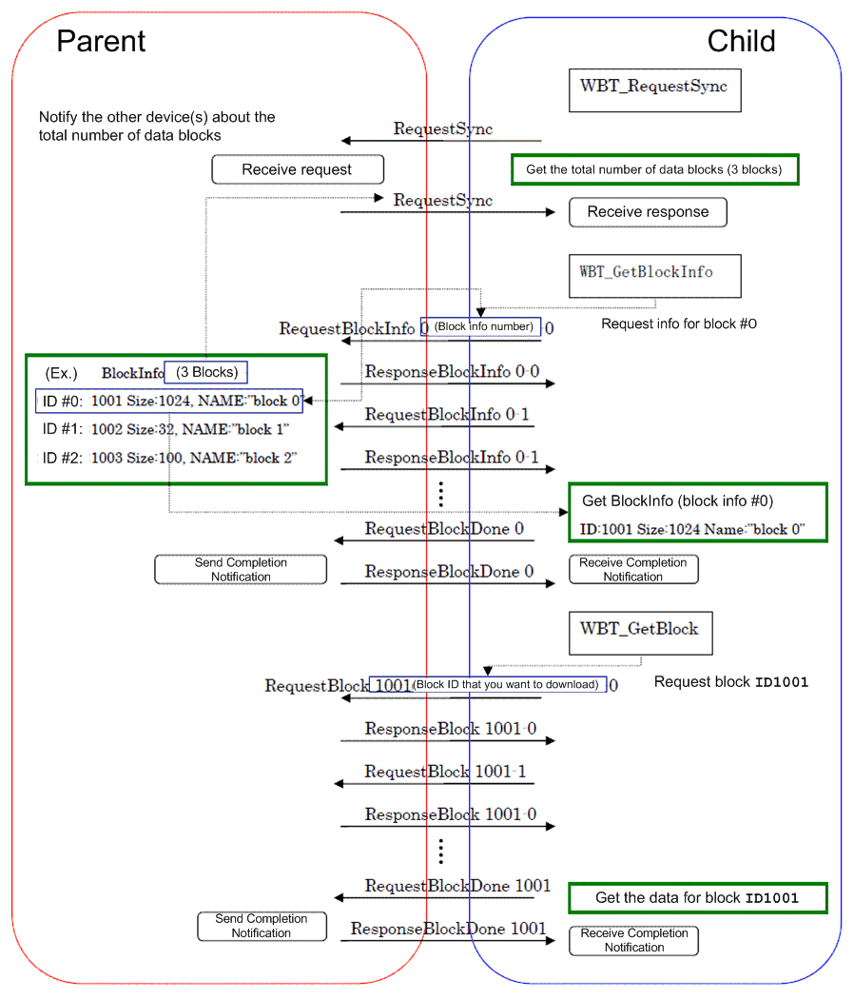
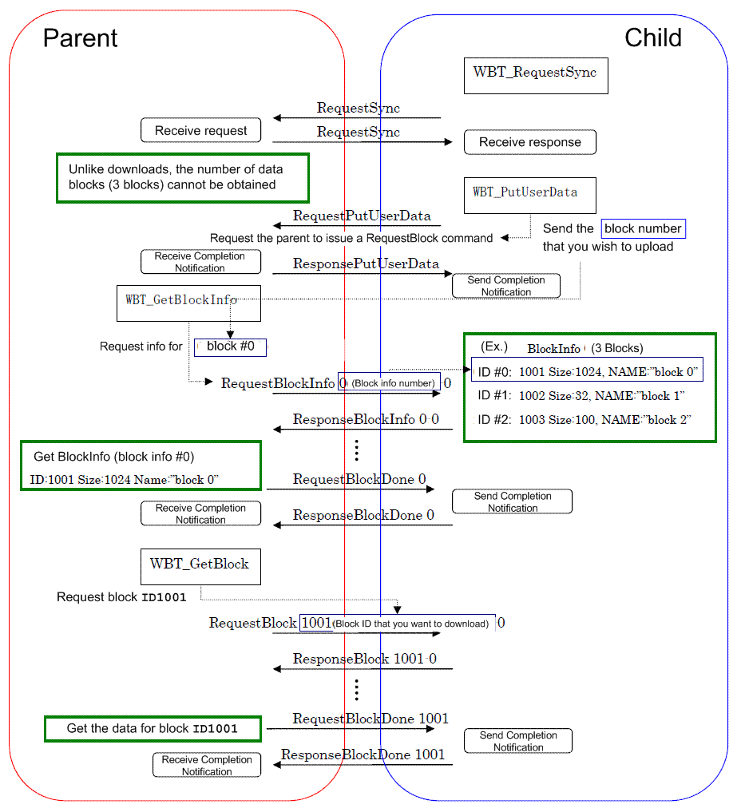

The figure below shows the packet flow during download and upload when using WBT.
Note: Since half-duplex communications are used between parents and children, if an upload and download occur at the same time, the upload takes priority from the child's perspective.
Packet flow during download
The following figure shows the packet flow exchanged between parent and child during download.

Packet flow during upload
An upload is essentially the same as a download, but the parent and child actions are reversed. For an upload, the child must notify the parent by sending block information using WBT_PutUserData. (If the upload occurs immediately after RequestSync and the blocks to upload will not change, the WBT_GetBlockInfo function may be called as the RequestSync receive callback.)
The following figure shows the packet flow exchanged between parent and child during upload.

2006/03/13 Initial version.
CONFIDENTIAL